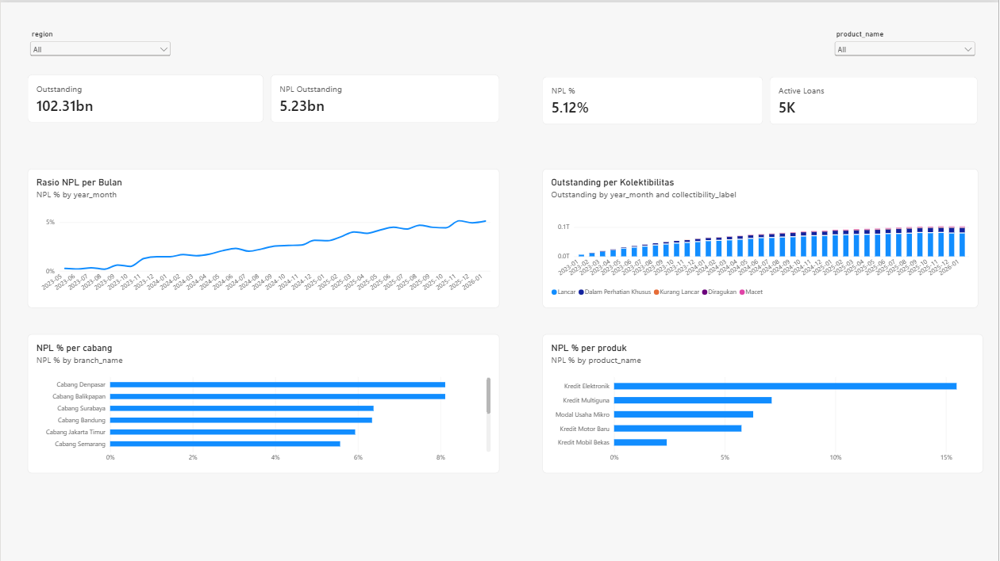
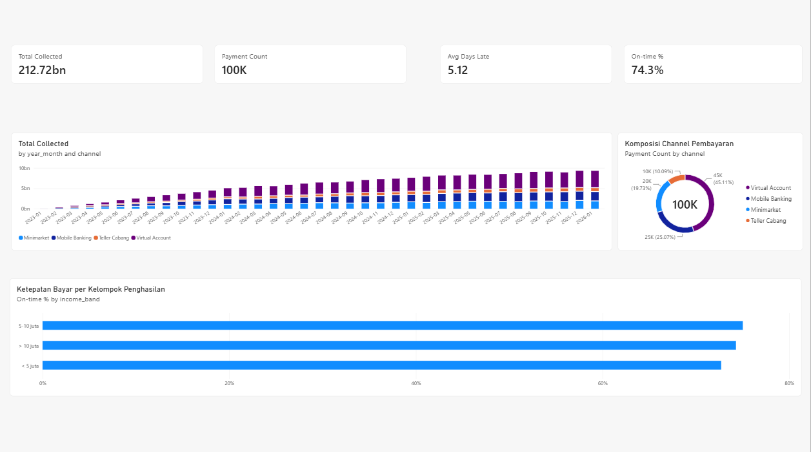

Loan Portfolio Data Warehouse
"How much of our loan book is going bad, and where?"
WHAT I BUILT
A SQL Server warehouse for a fictional Indonesian multifinance company. Five SSIS packages load it every night: incremental extracts by watermark, a loop over daily payment files that sends dirty rows to a reject table instead of failing the run, SCD Type 2 customers with point-in-time lookups, and a monthly snapshot with OJK collectibility. Deployed to the SSIS catalog and scheduled with SQL Server Agent.
WHAT I FOUND
- NPL rose steadily to 5.12% by January 2026 as the portfolio matured.
- Consumer electronics loans default at about 15%, roughly twice any other product.
- Every one of the 402 dirty rows hidden in the files was caught and logged, and none reached the warehouse.
8,000loans
100Kpayments loaded
5.12%NPL ratio
402bad rows caught

